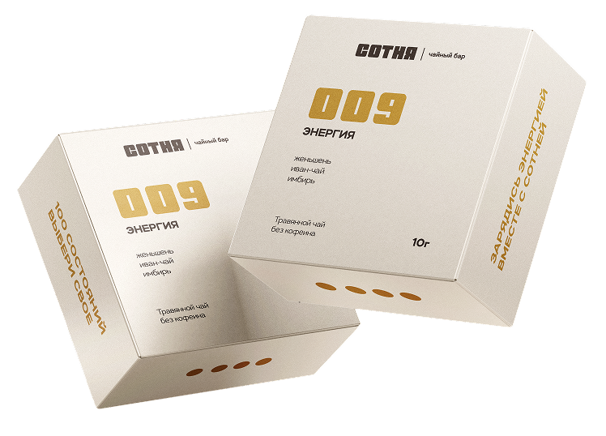

БРЕНДБУК
100 состояний.
Выбери свое.
Брендбук чайного бара «Сотня» — руководство по использованию фирменного стиля и коммуникации бренда.
Исследовать брендбук →
БРЕНДБУК
Брендбук чайного бара «Сотня» — руководство по использованию фирменного стиля и коммуникации бренда.
Исследовать брендбук →